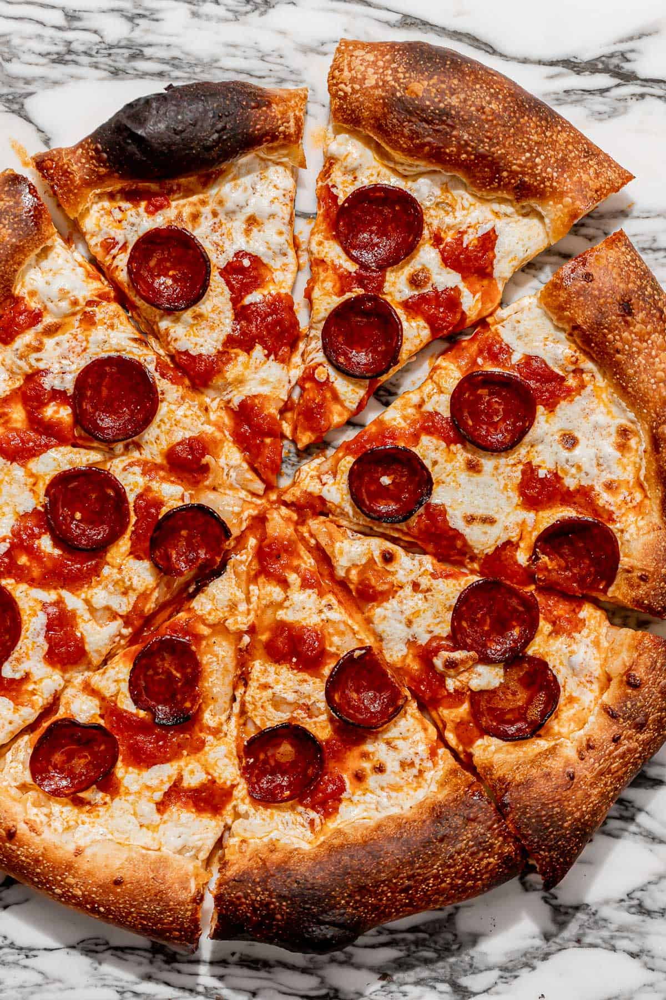

Pepperoni Pizza

Description
Pepperoni pizza is a classic Italian-American dish featuring a crispy crust, tangy tomato sauce, melted mozzarella cheese, and spicy, savory pepperoni slices.
Ingredients
For the Dough:
- 2 ¼ teaspoons (1 packet) of active dry yeast
- 1 cup of warm water (110°F/45°C)
- 2 ½ cups all-purpose flour
- 1 teaspoon sugar
- 1 teaspoon salt
- 1 tablespoon olive oil
For the Toppings:
- ½ cup pizza sauce
- 1 ½ cups shredded mozzarella cheese
- 20-25 slices of pepperoni
- ½ teaspoon dried oregano (optional)
- ½ teaspoon crushed red pepper flakes (optional)
Steps
- Prepare the Dough: In a bowl, mix warm water, yeast, and sugar. Let it sit for 5-10 minutes until foamy. Add flour, salt, and olive oil. Mix until a dough forms. Knead on a floured surface for 5-7 minutes until smooth. Place the dough in a greased bowl, cover, and let it rise for about 1 hour until doubled in size.
- Preheat the Oven: Preheat your oven to 475°F (245°C). If using a pizza stone, preheat it as well.
- Shape the Dough: Punch down the risen dough and roll it out into a 12-inch circle. Place it on a pizza pan or baking sheet lined with parchment paper.
- Add the Toppings: Spread the pizza sauce evenly over the dough. Sprinkle the mozzarella cheese on top. Arrange the pepperoni slices evenly. Optionally, sprinkle oregano and red pepper flakes for extra flavor.
- Bake the Pizza: Bake in the preheated oven for 12-15 minutes, or until the crust is golden and the cheese is bubbling.
- Serve and Enjoy: Remove from the oven and let it cool for a few minutes. Slice and enjoy your delicious homemade pizza!
Home